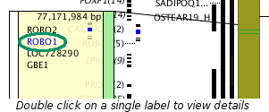
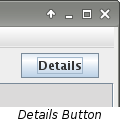
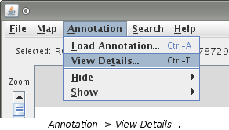
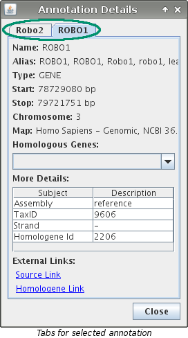
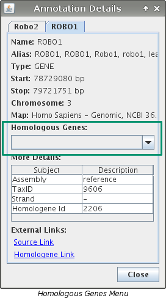
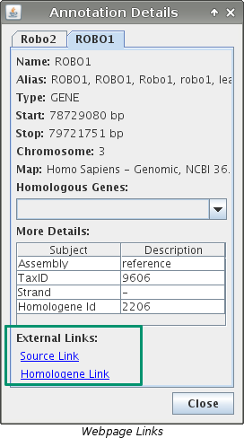

View Details
Map Details
Viewing details about a particular map is done by double clicking on the map
label. This will open up the website of the source where the map data was
gathered from. If the website is not available, a dialog box will appear
telling why.
Segment Details
Viewing details about a segment is done by double clicking on the segment of
interest. This will open up the website of the source where the segment data
was gathered from. If the website is not available, a dialog box will appear
telling why.
Annotation Details
VCMap has an "Annotation Details" dialog box that contains additional
information about annotation. This can be accessed in any of four ways:
- Double clicking on an annotation label. If the annotation is in a feature grouping
then you need to first click on the grouping and then double click on the label.

- Pressing the "Details" button located in the top right corner.

- Pressing "Ctrl + T" on the keyboard.
- Choosing "Annotation -> View Details..." from the menu.

Note: Steps 2, 3, and 4 above require that
annotation be selected first.
If multiple pieces of annotation are selected, the dialog will contain information about
every selected piece. Each different annotation will have its own tab. If an annotation
is found on multiple loaded maps, it can be viewed by using the "Homologous Genes"
drop down menu within the "Annotation Details" dialog. Even more additional
information can be viewed by using the links found in the in the lower left corner. These links
will open up the webpage for the source that the data was gathered from.



Additional Notes
- A working internet connection is required to view the links to the websites.
- VCMap only has a "Details Dialog" available for annotation.
See Also